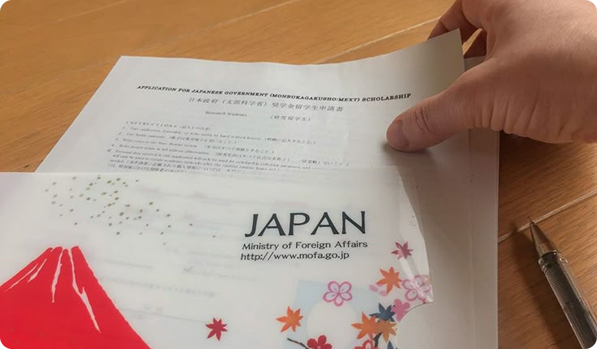

1
STUDY IN JAPAN 2025
Blog Categories
Recent Posts
Visa Updates: Japan Announces Revised Visa Requirements for International Students
Dec 15, 2024Complete Guide: GPA to Percentage Conversion for Japan University Applications
Dec 12, 2024
